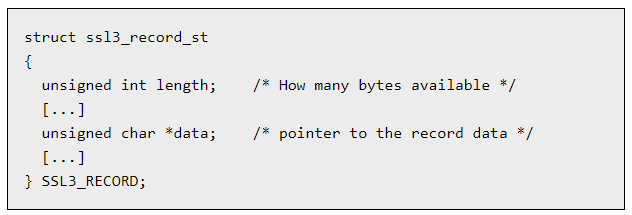
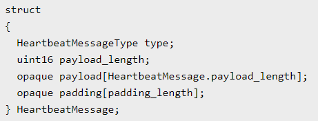
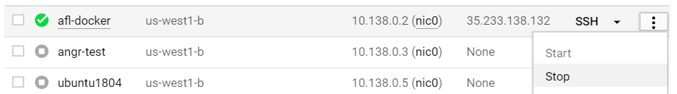

Because of its potential for finding software errors quickly, smart fuzzing has become increasingly prevalent in software development and testing in order to secure the programs, libraries, and operating systems that we rely upon. This lab steps through exercises that will walk you through how to use such tools to identify and correct some of the most common and devastating software errors.
You will deploy a Compute Engine instance, install Docker, build a Docker container image that has AFL installed, download the AFL exercises (based on Thales Security's excellent tutorial), and use AFL to find vulnerabilities in them including the Heartbleed bug.
us-west1-bssh into instancesudo apt update sudo apt install -y docker.io sudo usermod -a -G docker $(whoami)
sudo su -c "echo kernel.core_pattern=core >> /etc/sysctl.conf" echo core | sudo tee /proc/sys/kernel/core_pattern
Note: Derived from Thales E-security AFL training
git clone https://github.com/wu4f/cs492-src cd cs492-src/afl
Read the Docker file to see what is included, then set the password for the fuzzer account in the container (to be used when you sudo)
FROM ubuntu:20.04
# Originally from Michael Macnair
LABEL maintainer="cs492"
# Users
RUN useradd --create-home --shell /bin/bash fuzzer
# AFL + Deps
USER root
RUN apt update && apt upgrade -y
RUN DEBIAN_FRONTEND=noninteractive apt install -y clang llvm-dev git build-essential curl vim nano libssl-dev screen cgroup-tools sudo gcc-multilib gcc gdb tmux afl++
# For sudo for ASAN:
RUN usermod -aG sudo fuzzer
USER fuzzer
WORKDIR /home/fuzzer
RUN curl https://lcamtuf.coredump.cx/afl/releases/afl-latest.tgz | tar xz
# Exercises
USER fuzzer
WORKDIR /home/fuzzer
COPY . cs492-afl
# See the README - this password is visible to anyone with access to the image
USER root
RUN echo "fuzzer:`cat cs492-afl/password.txt`" | chpasswd && rm cs492-afl/password.txt
RUN chown -R fuzzer:fuzzer cs492-afl
USER fuzzerLocal container named cs492-afl
echo "cs492592" > password.txt docker build . -t cs492-afl
Done in privileged mode via the use of the "-di" flag to detach the container once running it (to keep it up)
docker run --privileged -di cs492-afl
Done via
docker ps
objective_einstein). CONTAINER ID IMAGE COMMAND CREATED STATUS PORTS NAMES 3d09abf5ec45 afl "/bin/bash" 6 minutes ago Up 2 seconds objective_einstein
Done via
docker images
REPOSITORY TAG IMAGE ID CREATED SIZE cs492-afl latest 309344bef881 4 months ago 919MB
objective_einstein", the command isdocker stop objective_einstein
docker ps -a
docker rm objective_einstein". Note that while this removes the container, it does not remove the local container image it was derived from (i.e. cs492-afl). docker rmi cs492-afl" after stopping the containerDone via its name, the command is:
docker start objective_einstein
docker exec -it objective_einstein /bin/bash
afl,buiild AFLln -s afl-* ./afl cd afl make; make -C llvm_mode
tmuxUsed to create multiple shells
tmux
c * in the session information at the bottom denoting the active screen n p In this lab, you will use the address sanitization feature in the compiler to generate accurate information about any memory corruption bug that your program has. For this program, a trivial buffer overflow bug is in the program. View the output when sanitization is off and when it is on.
Show the output of the program when run with a benign input:
cd ~/cs492-afl/01_asan ~/afl/afl-gcc -m32 -o vulnerable vulnerable.c echo hi | ./vulnerable
Show the output using a longer input
echo hihihi | ./vulnerable
Show the output of the program when run with a benign input:
AFL_USE_ASAN=1 ~/afl/afl-gcc -m32 -o vulnerable vulnerable.c echo hi | ./vulnerable
echo hi | ./vulnerable 2> asan_out.txt)Answer the following questions by reading the output file.
vulnerable.c where the error occurs.With the AFL compiler performing the instrumentation, the AFL fuzzer can be used to automatically find memory corruption errors that lead to crashes. Note that the AFL fuzzer requires that your window be resized to at least 80x25. In this level, you will run the fuzzer on a similar program that has a buffer overflow vulnerability.
Build the binary:
cd ~/cs492-afl/02_scanf_fuzz ~/afl/afl-gcc -m32 -o vulnerable vulnerable.c
Then, create a directory for seeding initial input and a directory for output and run the fuzzer on the binary.
mkdir inputs outputs ~/afl/afl-fuzz -i inputs -o outputs -- ./vulnerable
As soon as a single crash is found,
outputs/crashes/id* using xxd
Save the output, then repeat the fuzzing step again
outputs/crashes/id* using xxdIn this level, you will use the fuzzer to find another vulnerability. The level includes a Makefile.
Build program via make
cd ~/cs492-afl/03_fmt_fuzz make
Then, run the fuzzer:
~/afl/afl-fuzz -i inputs -o outputs -- ./vulnerable
As soon as a single crash is found,
outputs/crashes/id* using xxdFuzzers instrument paths in a program in order to zero in on problematic input. In this level, there are two programs that will both crash on the same input.
Both programs (path_based.c and strcmp_based.c) will crash on the same input. One uses a library call that is opaque to the fuzzer while the other implements the logic within its source code. Fuzzing will find the crashing input quickly in one because of the number of code paths it splits itself across, but not in the other. Given what you know about the AFL fuzzer, which one might the fuzzer have difficulty with?
path_based programBuild both programs via the Makefile:
cd ~/cs492-afl/04_path_fuzz make
Fuzz the path_based program to identify the crashing input:
~/afl/afl-fuzz -i inputs -o outputs -- ./path_based
As soon as a single crash is found, quickly note the following (before exiting the fuzzer):
total execs" and the number of "total paths"outputs/crashes/id* using xxdtotal paths" based on examining the source code in path_based.cstrcmp_based programNow, run the fuzzer on the other binary for at most twice the number of total executions as the first. Terminate the fuzzer at this point regardless of output
~/afl/afl-fuzz -i inputs -o outputs -- ./strcmp_based
total paths" foundtotal paths" differs between programs based on examining the source codeWith an understanding of how AFL works and how to apply it to find vulnerabilities, we will now examine a more complex program.
vulnerable.c to locate and describe the three vulnerabilities in the file (one for each command)cd ~/cs492-afl/05_multi CC=~/afl/afl-clang-fast AFL_HARDEN=1 make
echo hi | ./vulnerable
ec , head, c)Run the program on the inputs provided in the inputs directory to understand what each command does
cat inputs/ec ; ./vulnerable < inputs/ec cat inputs/head ; ./vulnerable < inputs/head cat inputs/c ; ./vulnerable < inputs/c
Run the fuzzer using the inputs directory to seed the search space. Wait until you have found a crashing input for each of the 3 commands. Crashes are located in the outputs directory. A tmux session will be helpful to monitor the output as the fuzzer runs in another session.
~/afl/afl-fuzz -i inputs -o outputs ./vulnerable
tmux session and re-attach at a later timeShow the xxd output for each of the three crashing inputs found in the outputs directory.
Now, we will apply AFL to automatically find the Heartbleed vulnerability
Clone using the tag containing the vulnerability
cd ~/cs492-afl/06_heartbleed git clone https://github.com/openssl/openssl.git cd openssl ; git checkout tags/OpenSSL_1_0_1f -b cs492
Configure and build OpenSSL with ASAN
CC=~/afl/afl-clang-fast CXX=~/afl/afl-clang-fast++ ./config -d AFL_USE_ASAN=1 make
Examine handshake.cc top-level directory. The code that connects the fuzzer to the SSL connection that is made via stdin is included. Uncomment the appropriate lines in the file after analysis
After editing the file, compile the handshake program and increase the memory limits for AFL
AFL_USE_ASAN=1 ~/afl/afl-clang-fast++ -g handshake.cc openssl/libssl.a openssl/libcrypto.a -o handshake -I openssl/include -ldl sudo ~/afl/experimental/asan_cgroups/limit_memory.sh -u fuzzer ~/afl/afl-fuzz -i in -o out -m none ./handshake
We will now analyze the bug by examining the SSL record and the heartbeat message embedded into the record (as its record data).


handshake program, an SSL3 record is constructed that contains a HeartbeatMessage. The input includes an SSL3 record type, an SSL3 major version number, an SSL3 minor version number, the record length, a HeartbeatMessageType (request or response), a payload length for the HeartbeatMessage, and finally the payload for the HeartbeatMessage.Run the fuzzer
~/afl/afl-fuzz -i in -o out -m none ./handshake
xxd, dump each inputExamine OpenSSL source code
ssl/ssl3.h, find the protocol type in decimal of the TLS HeartBeat message. Calculate its hexadecimal equivalent and locate it in the crashing inputssl3_get_record() on line 275 of ssl/s3_pkt.c. This is what the handshake program has been programmed to send in from a file.rr).n2s()is defined in line 249 in ssl/ssl_locl.h322 /* Pull apart the header into the SSL3_RECORD */ 323 rr->type= *(p++); 324 ssl_major= *(p++); 325 ssl_minor= *(p++); 326 version=(ssl_major<<8)|ssl_minor; 327 n2s(p,rr->length);
Using the code above and the structure definition given for the HeartbeatMessage, for each of your inputs
xxd listing of the crashing input, the values for rr->type, ssl_major, ssl_minor, and rr->length that are used.xxd listing of the crashing input the HeartbeatMessageType (a single byte), the HeartbeatMessage payload_length, and the Heartbeat Message payload (if any).ssl/t1_lib.cCelebrate! (Or not). Be sure to stop the VM to save $.